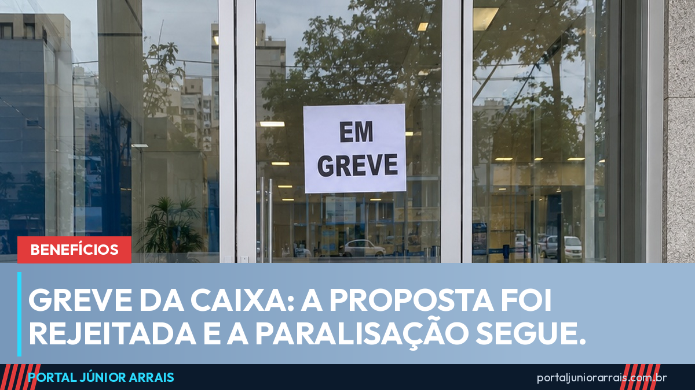

Greve da Caixa continua: bancários rejeitaram a proposta com 59,3% dos votos

A greve dos empregados da Caixa Econômica Federal continua. Em assembleia realizada na segunda-feira, 21 de setembro, das 11h às 18h, a nova proposta do banco para o acordo coletivo de trabalho foi rejeitada por 59,3% dos votos. A paralisação seguiu no dia seguinte.
Era a segunda tentativa de acordo desde o início do movimento. O portal havia registrado, na semana passada, que a proposta iria à votação no dia 21. Com a recusa, a negociação volta à mesa e não há, por enquanto, data marcada para o fim da greve.
O que continua sendo pago
Esta é a parte que interessa a quem depende do banco todo mês, e ela não mudou: Bolsa Família, benefícios do INSS, BPC, FGTS, abono e seguro-desemprego continuam sendo pagos normalmente. Os créditos são automáticos e não dependem de um funcionário liberar nada no guichê.
O que a greve afeta é o atendimento presencial. Parte das agências abre com equipe reduzida e algumas não abrem, o que aumenta a fila e atrasa o que só se resolve no balcão — atualização cadastral, desbloqueio presencial, financiamento habitacional em andamento, penhor e atendimento a empresas. Os caixas eletrônicos, o aplicativo e as lotéricas seguem funcionando.
Quem recebe benefício pelo Caixa Tem ou por conta corrente não precisa fazer nada de diferente. O calendário de pagamento não foi alterado pela greve, como já mostramos quando a paralisação começou.
Cuidado com golpe
Toda greve de banco vira oportunidade para o golpista, porque ela cria exatamente o que ele precisa: gente ansiosa achando que o dinheiro pode não cair. Começam a circular mensagens dizendo que "o pagamento foi suspenso pela greve", que é preciso "revalidar a conta para receber" ou que existe um "canal emergencial" de atendimento. Vêm com link, com pedido de senha do aplicativo ou com cobrança de taxa para "liberar o crédito".
Nenhum benefício deixa de ser pago por causa de greve, e nenhum órgão do governo ou banco público pede senha, código do aplicativo ou Pix para liberar dinheiro que já é seu. Se o seu pagamento realmente não caiu na data, se a conta foi bloqueada ou se você recebeu uma dessas abordagens, procure um profissional de sua confiança para entender o motivo antes de fornecer qualquer dado.
Júnior Arrais · Editor do Portal Júnior Arrais
Comunicador de Ubá (MG). Escreve todos os dias sobre benefícios sociais, INSS, trabalho e economia do dia a dia, a partir do Diário Oficial, de portarias e de fontes oficiais, em linguagem simples. Conheça a linha editorial e a política de correções do portal.